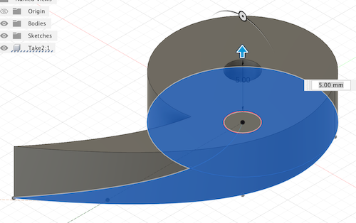
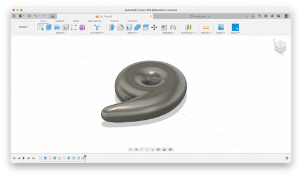
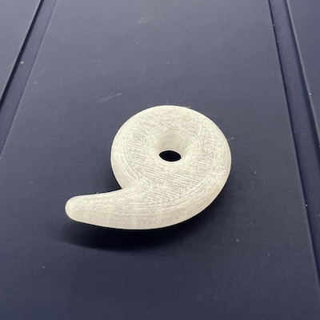
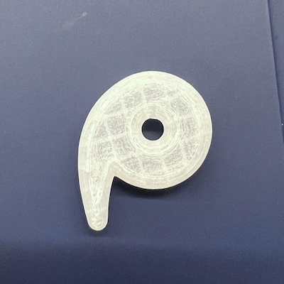
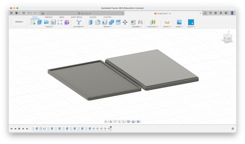
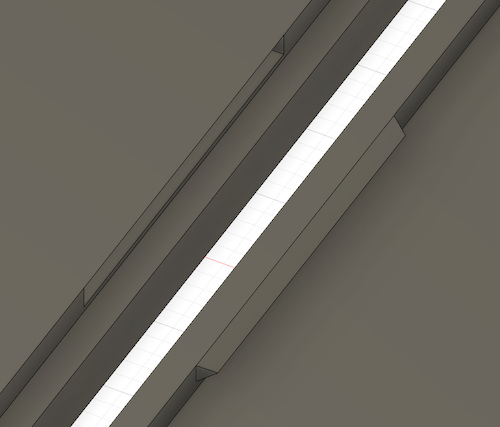
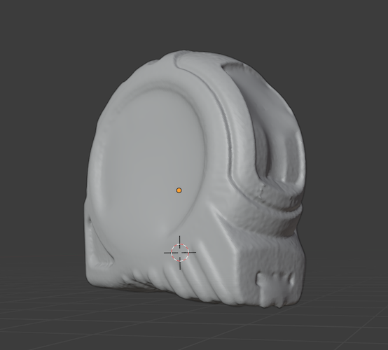
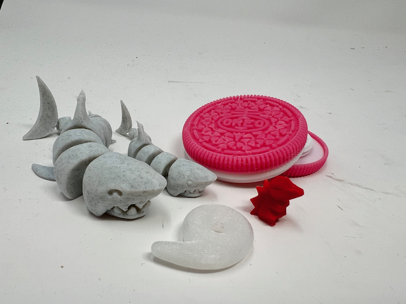

<div class="textcontainer">
<p class="margin"> </p>
<h3>Week 5: 3D Design & Printing</h3>
<p class="margin"> </p>
<div class="flexrow">
<a id="btn" href="wk5.zip" download>Download my files from this week!
</a>
</div>
<p class="margin"> </p>
<h4>Assignment: Design and Print Something</h4>
As a first test print, I wanted to model an amber relic from the video game
*The Legend of Zelda: Skyward Sword*, because it's a smooth round shape that
would be hard to make with subtractive processes. I modeled it with square
edges in Fusion, then used the Fillet tool to round it off. I scaled the model
to take about 15 minutes to print, then sliced it in Prusa and printed it.
<p class="margin"> </p>
<div class="flexrow">


</div>
<p class="caption">Left: the extrusion step (note the square edges). Right: the rounded relic shape.</p>
<p class="margin"> </p>
<div class="flexrow">


</div>
<p class="caption">The printed piece. I thought it was cool that the translucent
filament lets you see the structure of the infill supports.</p>
For an actual project, I wanted to make a snap-close case that could hold my
ID, because right now I have a flexible plastic one that's splitting at the seams from repeated
opening and closing. To start, I looked up some tutorials on snap joints, and found
a few videos about modeling a snap-close box. At first, I wanted to make a case
with a hinge on one side and a snap closure on the other, but then I switched to
just a basic snap case for a first prototype since it seemed like the hinge would
be tricky. You can watch the tutorial I eventually settled on <a href="https://youtu.be/VVmOtM60VWw" target="_blank">here</a>.
<p class="margin"> </p>
<div class="flexrow">


</div>
<p class="caption">Left: version one of the snap-fit case. Right: a close-up of the snap joint.</p>
My first prototype didn't quite fit together properly, and I realized that that was
probably because the distance between the outer rim and the inner shelf on the cover
didn't have any tolerance in it to fit properly with the bottom, so when it was
printed the slight expansion of the parts made the shelf too large. I redesigned
the top cover to have an outer ridge to house the snap holes, and I also made the case
slightly larger so the ridge would fit around an id card instead of resting on top.
<p class="margin"> </p>
<p class="margin"> </p>
<h4>Assignment: Scan Something</h4>
I used the lab scanner to make a 3D scan of a tape measure and along the way made some
discoveries about what scans well and what doesn't. At first I wanted to scan a screw,
but all the screws I found were either 1) shiny, which doesn't scan well; 2) dark-colored,
which also doesn't scan well; and/or 3) too small for the sensor to see. My second
scan attempt was a flashdrive I have, which also was a little too small and too
shiny to scan well.
<p class="margin"> </p>
The third attempt was when I scanned the tape measure, which kind
of worked. The black parts of the tape measure didn't scan well, nor did the metal
bit at the end of the tape, and I had to rest it on its side for stability reasons
instead of standing it up, so the scan has some holes in it. That being said,
the scane did produce an object that, with some adjustment work, could probably
be a viable 3D print (albeit a low-resolution one), so I counted it as mostly a success.
<p class="margin"> </p>
<div class="flexrow">

</div>
<p class="caption">The final scan was not great, but it was legible as a tape measure!</p>
Later, I also printed a few more models that I found online: an articulated shark
and an airtag case designed to look like an Oreo cookie. The shark is designed to
have a moveable jaw, but the hinge broke as I was trying to get the supports out,
so I ended up just gluing it shut. The designer of the airtag case either didn't
properly account for part expansion or I printed it wrong, because one of the pieces
was a few millimeters too big in diameter. I managed to get it to fit by filing
the part down and then using a hammer to get it to snap in correctly.
<p class="margin"> </p>
<div class="flexrow">

</div>
<p class="caption">An assembly of some of my 3D prints from this semester.</p>
</div>